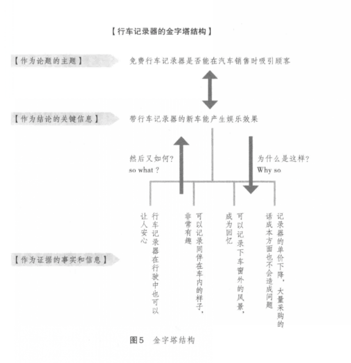

WHAT
很多时候，在很多场景下，要学会批判性思维。第一次听到的时候，非常的疑惑，到底什么是批判性思维？
很多人认为，那些不假思索地，凭借着直觉得出来的决定，没有通过逻辑验证的决定都不是批判性思维。批判性思维，就是带着批判的角度去看待现在的结论，通过多个角度去问为什么来找到结论产生的根本原因。批判性思维，批判的是什么？批判的是逻辑，而那些经不起批判的逻辑所得出来的结论都是云烟，只有那些经得起批判的，才是真理。
WHY & WHEN
在学校，很多时候，学生学习的方式都是老师教什么，就学什么，说什么就是什么，学生们缺少批判性思维，缺少求真的的过程。一味地只是吸收外部的知识，只能让思维变的越来越被动，当面对多个冲突的结论或者方法时，该如何取舍？而如果时刻带着不断提问并思考问题的答案的态度去和知识进行互动的交流，才能让我们看清事物的本质。
相信每个结论，都有它背后的逻辑，都有它成立的前提条件，当这个前提条件不成立的时候，那么这个结论也就随之破灭。比如说：1 + 2 = 3，为什么这个等式成立，成立的前提条件是什么，它背后有存在什么样的逻辑推导？这个前提条件比较简单，1 + 1 = 2，只有当这个前提条件成立的情况下，1 + 2 = 3 这个结论才成立，如果 1 + 1 = 2，这个前提不成立， 那么意味着 1 + 2 = 3这个结论也是不成立。所以说，如果我们一味的只是去吸收外部的知识，不带着一颗求真的态度，去学习我们了解的知识，这样有可能让我们偏离世界中心。
HOW
该如何开始呢？刻意练习？是的，刻意练习，不过在刻意练习之前，需要找到自己的训练模型，就像机器学习一样，先有模型，然后使用大量数据刻意训练，并在训练的过程中调整的模型。
- 找到学习模型或者学习方法
- 刻意训练
找到学校模型或者学习方法
- 先看一下《逻辑思维简单入门》，可以帮助回忆一下“童年”学的简单逻辑，找到逻辑的感觉。个人觉得不用全部看完，只要找到对文字的逻辑感觉就可以，“适可而止”（貌似这个成语用的不太合适）。
- 进阶《麦肯锡入职培训第一课 让职场新人一生受用的逻辑思考力》，学习如何使用 图解法可视化 批判性思考，将思维可视化出来，释放大脑。

- 系统化的学习批判性，可以看看《学会提问》、《批判性思维的工具》
- 找到属于自己的 学习模型
刻意练习
找到自己的模型，适合自己的方法论，接着就是刻意练习，在练习的过程中适当调整学习模型，做到从量—>质的变化。
- 画：可视化，使用 《麦肯锡入职培训第一课 让职场新人一生受用的逻辑思考力》 的图解法，在听 session/开会 时，将 session主题使用图解可视化的方式批判一下。
- 听：使用碎片时间听，听什么呢？听一些时间比较短（15分钟内）的知识分享（比如：喜马拉雅 FM：里米创媒、 得到：李翔知识内参），听的过程中，带着批判的模型去训练，去套。分析分享的主题的 论点、论据，整个论证过程是否有没有逻辑。和人沟通时，讨论时，学会阶段性总结对方在说什么。
- 说：说话的时候，表述自己观点的时候，刻意使用经得起批判的方式表述，结构化、有逻辑去表述。比如：总分总。
- 看：《思考的艺术》这本书上有很多例子可以练习。